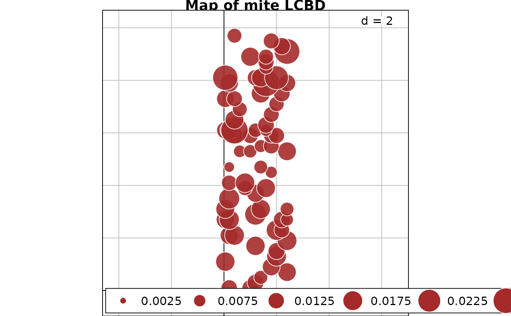
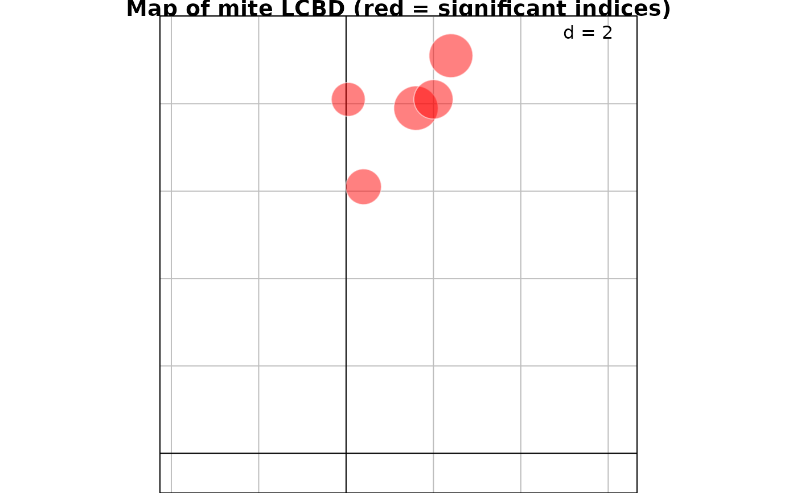
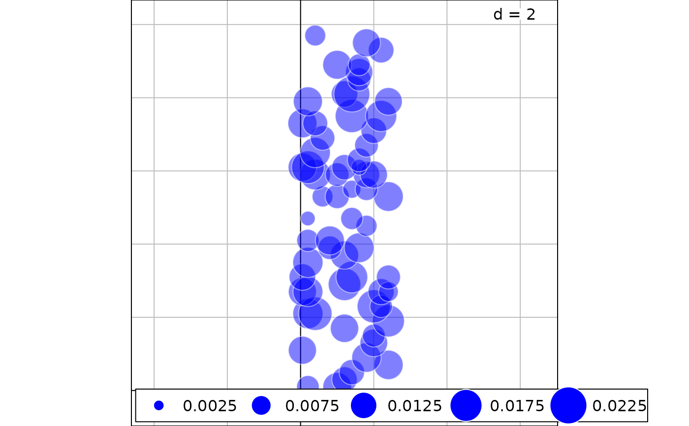

Compute estimates of total beta diversity as the total variance in a community data matrix Y, as well as derived SCBD and LCBD statistics, for 19 dissimilarity coefficients or the raw data table. Computing beta diversity as Var(Y) for raw, untransformed community composition data is not recommended. Tests of significance of the LCBD indices are also produced.
beta.div( Y, method = "hellinger", sqrt.D = FALSE, samp = TRUE, nperm = 999, adj = TRUE, save.D = FALSE, clock = FALSE )
| Y | Community composition data. The object class can be either
|
|---|---|
| method | One of the 19 dissimilarity coefficients available in the
function: |
| sqrt.D | If
|
| samp | If |
| nperm | Number of permutations for the tests of significance of LCBD indices. |
| adj | Compute adjusted p-values using the Holm method. Default: |
| save.D | If |
| clock | If |
A list containing the following results:
beta: Total sum of squares and total beta diversity [=
Var(Y)] of the data matrix. BDtotal statistics computed with the same D
index are comparable among data sets having the same or different numbers
of sampling units (n), provided that they are of the same size or represent
the same sampling effort.
SCBD: Vector of Species
contributions to beta diversity (SCBD), if computed.
LCBD:
Vector of Local contributions to beta diversity (LCBD) for the sites.
p.LCBD: P-values associated with the LCBD indices.
p.adj: Corrected P-values for the LCBD indices, Holm correction.
method: Method selected.
note: Notes indicate whether
the selected coefficient is Euclidean or not.
D: The distance
matrix if save.D=TRUE.
When all sites contain a different set of species with no species in common, the maximum value that BDtotal can take depends on the method used in the calculation.
With methods
"hellinger", "chord", "profiles", which have maximum values of
sqrt(2), BDtotal produces an index in the range [0, 1] with a maximum value
of 1.
For dissimilarity indices with maximum values of 1, BDtotal has a maximum value of 0.5.
Dissimilarity indices that do not have maximum values of 1 or sqrt(2) produce BDtotal values that do not have an upper bound; hence they cannot be compared across taxonomic groups or among study sites. This group includes the chi-square distance.
See Legendre &
De Caceres (2013, p. 957-958), Table 2 and section Maximum value of BD.
For two sites only, the LCBD results are not interesting. With all
coefficients, the two LCBD indices are equal to 0.5. The two associated
p-values are 1 because LCBD is 0.5 for all columnwise permutations of the
data.
The calculation is aborted when Y only contains two identical
rows of data. In that case, SStotal and BDtotal are 0 and the LCBD indices
cannot be computed (value NaN).
Calculations may be carried out in two ways, depending on the selected method.
For untransformed or transformed raw data, the total sum of squares (SStotal)
is first computed, then the total beta diversity (BDtotal), which is SStotal divided
by (n - 1), is calculated. This algorithm is used for methods "euclidean",
"profiles", "hellinger", "chord", "log.chord",
"chisquare". No transformation of the data is computed when the method is
"euclidean". For methods "profiles", "hellinger",
"chord", "log.chord", "chisquare", the algorithm begins with
computation of the same-name transformation of the community data (Legendre and
Gallagher 2001; Legendre and Legendre 2012, Section 7.7; Legendre and Borcard
2018); SStotal and BDtotal are then computed for the transformed data, followed
by calculation of the SCBD and LCBD indices.
Calculations of BDtotal can also be conducted from a dissimilarity
matrix. SStotal is computed by summing the squared dissimilarities in the
lower triangular dissimilarity matrix and dividing by n. Then, total beta
diversity (BDtotal) is obtained by dividing SStotal by (n-1). With option
sqrt.D = TRUE, the computation of SStotal is equivalent to summing
the distances instead of the squared distances. Choices are:
"whittaker", "divergence", "canberra",
"percentdiff", "ruzicka", "wishart",
"kulczynski", "ab.jaccard", "ab.sorensen",
"ab.ochiai", "ab.simpson", "jaccard",
"sorensen", "ochiai". Equations for these dissimilarities are
presented in Table 1 of Legendre and De Cáceres (2013). The Ružička index
is described in Legendre (2014); this coefficient is suitable for beta
diversity studies. See Chao et al. (2006) for details about the
abundance-based (ab) coefficients.
Community composition data can be log-transformed prior to analysis with the
chord distance; see Legendre and Borcard (2018). The log(y+1) transformation
(log1p function of base) reduces the asymmetry of the species
distributions. The chord-log distance, readily available among the methods of the
beta.div function, is the chord distance computed on log(y+1)-transformed
data. This combined transformation is meaningful for community composition data
because the log is one of the transformations in the Box-Cox series, corresponding to
exponent 0; see Legendre and Legendre (2012, Section 1.5.6). Exponent 1 (no
transformation of the data) followed by the chord transformation and calculation of
the Euclidean distance would simply produce the chord distance. Exponent 0.5 (square
root) followed by the chord transformation and the Euclidean distance would produce
the Hellinger distance. The chord, Hellinger and log-chord distances represent a
series where the data are increasingly transformed to reduce the asymmetry of the
distributions. Note that it is meaningless to subject log-transformed community
compostion data to the "profiles", "hellinger", or "chisquare"
distances available in this function.
The Jaccard, Sørensen and Ochiai coefficients are the binary
forms of 10 of the 12 dissimilarity coefficients (including the Ružička
index) that are suitable for beta diversity assessment. The equivalences
are described in Legendre and De Cáceres (2013, Table 1). These popular
coefficients can be computed directly using function beta.div
without going to the trouble of applying the quantitative forms of these
coefficients to data reduced to presence-absence form. beta.div
produces the dissimilarity matrix in the form sqrt(D), which is Euclidean.
Hence for these three coefficients, function beta.div should be used
with option sqrt.D=FALSE.
Species contributions to beta diversity (SCBD indices for the species) are computed for untransformed or transformed raw data, but they cannot be computed from dissimilarity matrices.
Local contributions to beta diversity (LCBD indices) represent the degree of uniqueness of the sites in terms of their species compositions. They can be computed in all cases: raw (not recommended) or transformed data, as well as dissimilarity matrices. See Legendre and De Cáceres (2013) for details. LCBD indices are tested for significance by random, independent permutations within the columns of Y. This permutation method tests H0 that the species are distributed at random, independently of one another, among the sites, while preserving the species abundance distributions in the observed data. See Legendre and De Cáceres (2013) for discussion.
This version of beta.div calls computer code written in C to speed up
computation, especially for the permutation tests of the LCBD indices.
Chao, A., R. L. Chazdon, R. K. Colwell and T. J. Shen. 2006. Abundance-based similarity indices and their estimation when there are unseen species in samples. Biometrics 62: 361-371.
Legendre, P. 2014. Interpreting the replacement and richness difference components of beta diversity. Global Ecology and Biogeography 23: 1324-1334.
Legendre, P. and D. Borcard. 2018. Box-Cox-chord transformations for community composition data prior to beta diversity analysis. Ecography 41: 1820-1824.
Legendre, P. and M. De Cáceres. 2013. Beta diversity as the variance of community data: dissimilarity coefficients and partitioning. Ecology Letters 16: 951-963.
Legendre, P. and E. D. Gallagher, E.D. 2001. Ecologically meaningful transformations for ordination of species data. Oecologia 129: 271-280.
Legendre, P. and Legendre, L. 2012. Numerical Ecology. 3rd English edition. Elsevier Science BV, Amsterdam.
Pierre Legendre pierre.legendre@umontreal.ca
if(require("vegan", quietly = TRUE) & require("adegraphics", quietly = TRUE)){ data(mite) res = beta.div(mite, "hellinger", nperm=999) # Plot a map of the LCBD indices using the Cartesian coordinates data(mite.xy) s.value(mite.xy, res$LCBD, symbol = "circle", col = c("white", "brown"), main="Map of mite LCBD") ### Example using the mite abundance data and the percentage difference dissimilarity res = beta.div(mite, "percentdiff", nperm=999, clock=TRUE) # Plot a map of the LCBD indices signif = which(res$p.LCBD <= 0.05) # Which are the significant LCBD indices? nonsignif = which(res$p.LCBD > 0.05) # Which are the non-significant LCBD indices? g1 <- s.value(mite.xy[signif,], res$LCBD[signif], ppoint.alpha = 0.5, plegend.drawKey = FALSE, symbol = "circle", col = c("white", "red"), main="Map of mite LCBD (red = significant indices)") g2 <- s.value(mite.xy[nonsignif,], res$LCBD[nonsignif], ppoint.alpha = 0.5, symbol = "circle", col = c("white", "blue")) g2+g1 }#> Time for computation = 1.098000 sec